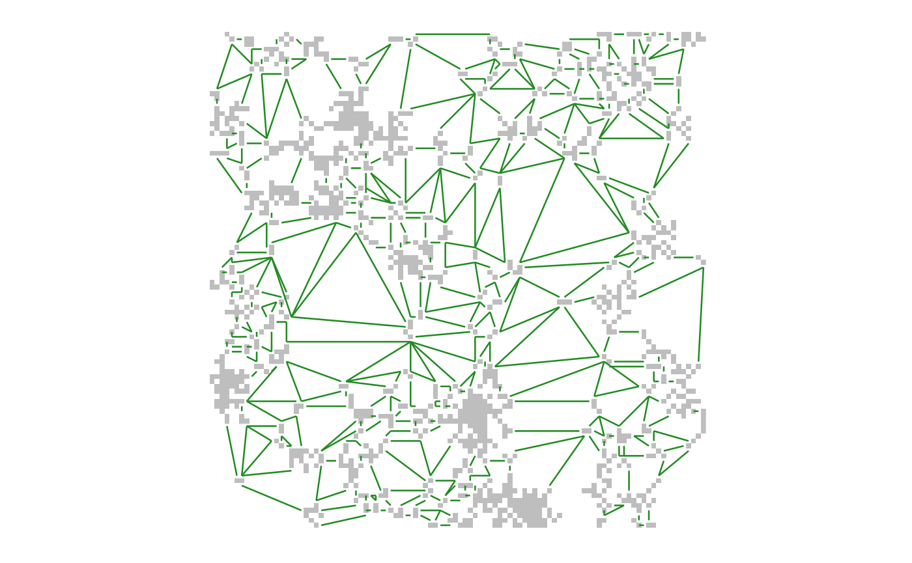
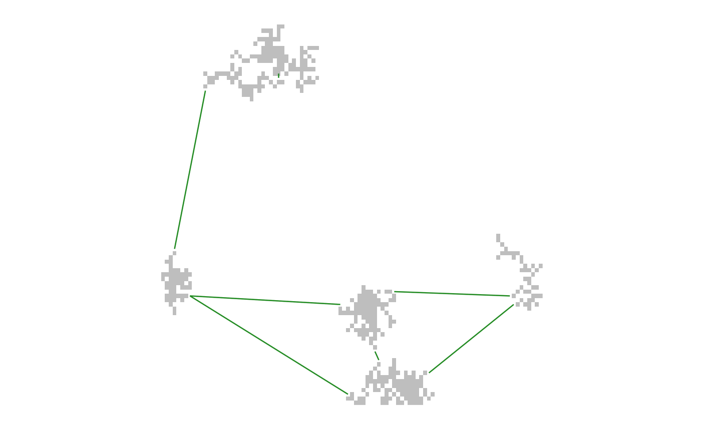
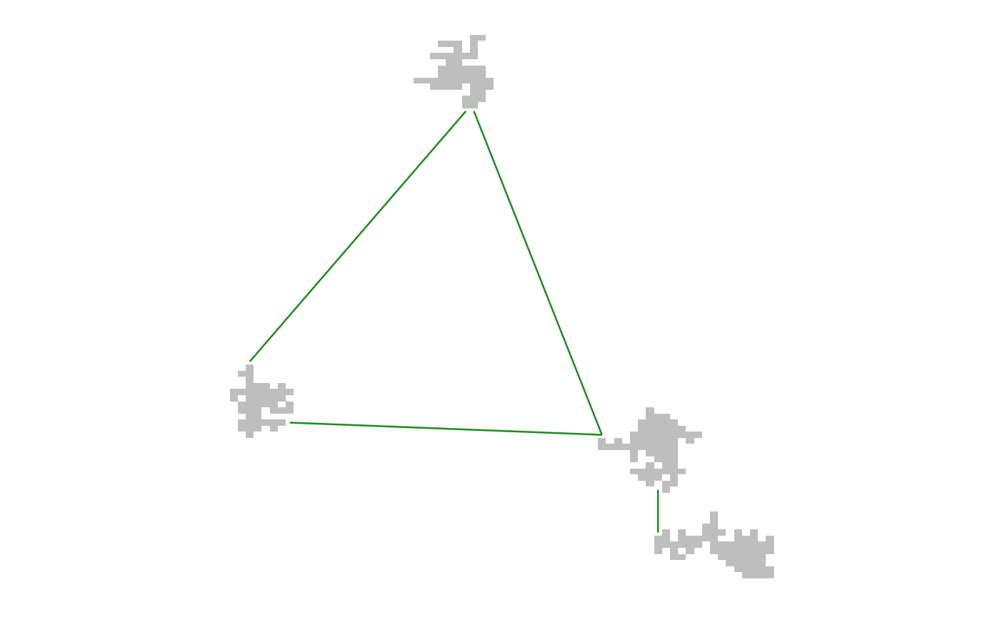

Pre-process patch rasters prior to their use with MPG.
patchFilter(x, cells = NULL, area = NULL, ...) # S4 method for RasterLayer patchFilter(x, cells = NULL, area = NULL, ...)
| x | A binary raster (i.e. consisting of |
|---|---|
| cells | The minimum number of cells that constitute a patch.
Default |
| area | The minimum area that constitutes a patch (where area is
calculated in the coordinate reference system of the
raster by multiplying the count of cells in patch by the x
and y resolution of a raster cell). Default |
| ... | Additional arguments passed to the |
A binary raster where all patches (i.e. clumped areas =1)
are greater than the specified area.
It examines a binary raster to identify all patches or clumps of cells with
values =1, determines their area, and returns a binary raster where
only patches of area greater than or equal to the specified amount are represented.
This is helpful when analyzing habitat connectivity models where patches represent a land cover or habitat type. For example, a raster may have patches of a certain habitat type of insufficient area to support the ecological process of interest. Another use case is remote sensing classification errors that have introduced artifacts. Filtering can help in both cases.
## Load raster landscape tiny <- raster::raster(system.file("extdata/tiny.asc", package = "grainscape")) ## Create a resistance surface from a raster using an is-becomes reclassification tinyCost <- raster::reclassify(tiny, rcl = cbind(c(1, 2, 3, 4), c(1, 5, 10, 12))) ## Produce a patch-based MPG where patches are resistance features = 10 ## and all patches are greater than or equal to 2 cells in size filteredPatch <- patchFilter(tinyCost == 10, cells = 2) tinyPatchMPG <- MPG(cost = tinyCost, patch = filteredPatch) plot(tinyPatchMPG)## Compare to removal of patches greater than or equal to 40 cells in size! filteredPatch <- patchFilter(tinyCost == 10, cells = 40) tinyPatchMPG <- MPG(cost = tinyCost, patch = filteredPatch) plot(tinyPatchMPG)## Use a rook/castle 4-direction case rather than the queen 8-direction case ## to identify neighbouring cells in a patch filteredPatch <- patchFilter(tinyCost == 10, cells = 40, directions = 4) tinyPatchMPG <- MPG(cost = tinyCost, patch = filteredPatch) plot(tinyPatchMPG)